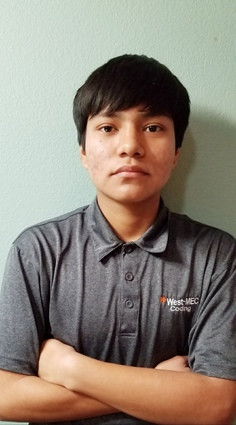

Bryan L. Vargas
The name's Bryan Vargas and Im aiming to be a Web Developer/Master. As for who I am, I'm someone who prioritizes progress and all the things needed to both rapidly and effectively achieve advancement. One Of my biggest beliefs is that nothing lasts forever, either you put in the effort to change a situation or it ends along side your life. In the end I want to be able to face as many situations as possible and be able to grow as a person. I refuse to sit still and watch everyone else blast off.
Currently I am studying Web Design In West-Mec's Coding program. By the time I finished I shall be knowledgeable on CSS3, HTML5, PHP, and Javascript. What the future holds for me is an associates in Web Development. I am Knowledgeable on the basics of graphic design involving software such as PhotoShop and Illistrator.
There are many things I enjoy to do on my own time. I spend time practicing my illrating skills, reading, or widening my knowledge on the music that artists create everyday.